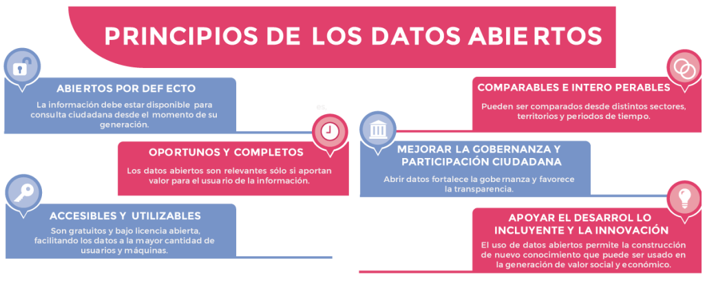

Los datos abiertos son información pública dispuesta en formatos que permiten su uso y reutilización bajo licencia abierta y sin restricciones legales para su aprovechamiento. En Colombia, la Ley 1712 de 2014 sobre Transparencia y Acceso a la Información Pública Nacional, define los datos abiertos en el numeral sexto como “todos aquellos datos primarios o sin procesar, que se encuentran en formatos estándar e interoperables que facilitan su acceso y reutilización, los cuales están bajo la custodia de las entidades públicas o privadas que cumplen con funciones públicas y que son puestos a disposición de cualquier ciudadano, de forma libre y sin restricciones, con el fin de que terceros puedan reutilizarlos y crear servicios derivados de los mismos”.
De este modo, la Ley establece la obligatoriedad de las entidades públicas de “divulgar datos abiertos”, teniendo en cuenta las excepciones de acceso a la información, asociadas a información clasificada y reservada establecidas en su título tercero, artículos 18 y 19. A continuación, se señalan algunos ejemplos de datos abiertos de entidades públicas disponibles en el Portal de Datos del Estado Colombiano:
Los datos abiertos tienen como principal característica que están publicados en sitios web de manera gratuita, accesibles al público, dispuestos en formatos que permiten su uso, reutilización y aprovechamiento sin restricciones legales y bajo licencia abierta. Algunos de los formatos de datos abiertos más comunes son:
Por otro lado, la definición del tipo de licencia bajo el cual se usarán estos datos abiertos se convierte en una de las principales actividades. Las licencias estándar en el entorno internacional se han constituido en un elemento de confianza digital en el uso de datos abiertos, ya que están concebidas como una forma de protección de los derechos de autor y de apoyo al dominio público de las obras protegidas, fomentando el acceso a la información pública, orientaciones sobre licencias pueden ser identificadas en el instructivo para la definición de licencias de datos, elaborado por la Unidad Administrativa Especial de Catastro Distrital - IDECA.
En la actualidad más de 30 países, y diferentes organizaciones internacionales como el Banco Mundial y las Naciones Unidas, hacen uso de licencias estándar para compartir sus trabajos. Para el licenciamiento de los datos abiertos una alternativa es usar licencias abiertas tipo Creative Commons (CC), que proporcionan un conjunto estándar de términos y condiciones que los creadores y otrostitulares de derechos, pueden utilizar para compartir obras originales de su autoría y cualquier otro material sujeto a derechos de autor y a derechos conexos que se especifican en la licencia pública.
La licencia abierta Creative Commons Attribution-ShareAlike 4.0 International (CC BY-SA 4.0) permite hacer uso, transformación, distribución,redistribución, reutilización, compilación, extracción, copia, difusión, modificación y/o adaptación de los datos abiertos, citando siempre la fuente.
La adopción de este tipo de licencia reconoce la producción o generación de los datos por la entidad publicadora, señalando que ésta no será responsable de la utilización o transformación de los mismos datos, ni tampoco de daños sufridos o pérdidas económicas que, de forma directa o indirecta, produzcan o puedan producir perjuicios económicos, materiales o sobre datos y aplicaciones, provocados por el uso y/o transformación de los datos, esta manifestación regularmente la adopta la entidad en la plataforma de datos donde los dispone, en Colombia se encuentra en el Portal de Datos del Estado Colombiano.
Los principios y buenas prácticas para la liberación de datos abiertos han sido establecidos en la Carta Internacional de Datos Abiertos, adoptada por Colombia desde 2016 como instrumento orientador en la generación y uso de datos.
Los adherentes a la Carta Internacional de Datos Abiertos reconocen que los gobiernos y otras organizaciones del sector público poseen grandes cantidades de datos que pueden ser de interés para los ciudadanos, y que esos datos son un recurso reutilizable. En consecuencia, se acordó seguir los principios que sientan las bases para el acceso a los datos y para su publicación y uso. Además de las características básicas de los datos abiertos, los principios actuales que promueve la Carta son:
